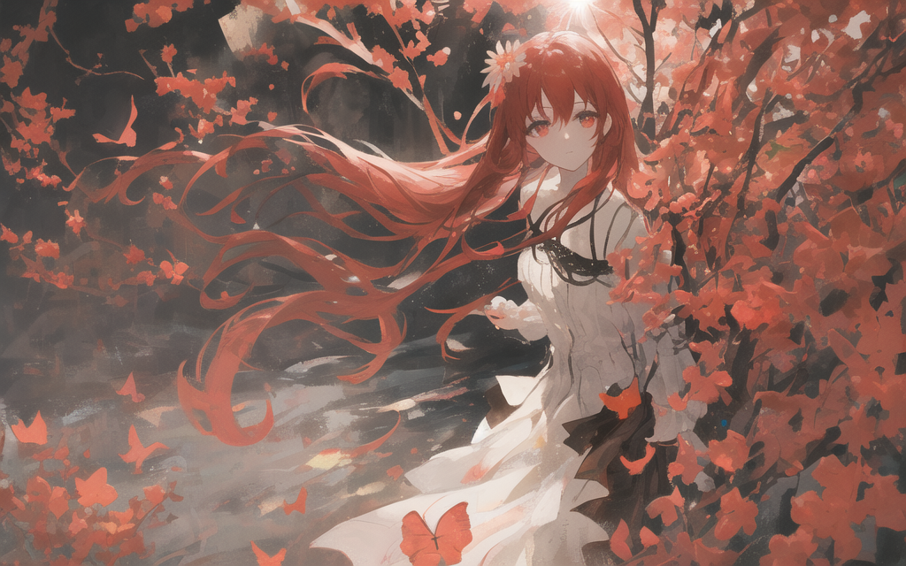

经典故事一：
楚子航是一个有龙类血统的人类男孩，而夏弥实际上是大地与山之王耶梦加得的化身，一个近乎完美的少女。两人在中学时期就是同学，夏弥曾抹去楚子航的记忆，尽管如此，楚子航对夏弥有一种熟悉的感觉。夏弥的情感更为复杂。作为人类时，她对楚子航暗生情愫，但成为龙王后，她的记忆被改变，意识到他们之间的关系已超越了界限。在学院中，夏弥虽然抗拒与楚子航接近，但情感的本能让她难以抵挡。夏弥和楚子航曾是高中同学，夏弥曾抹去楚子航的记忆，但两人之间有着难以言喻的感情。夏弥在生命的最后一刻留给了楚子航一把钥匙，暗示着她的一切都留在了那里，这成为楚子航长久的遗憾和悔恨。夏弥的哥哥芬里厄，是她的对手也是亲人，夏弥在将芬里厄推向死亡时，表现出了极度的悲痛，显示了她在亲情与本能之间的矛盾。 在后续的作品中，夏弥以某种形式复活，并与楚子航达成同盟关系，甚至暂时寄生于楚子航的精神内，与他合为一体，改造了他的身体。
经典故事二：
上杉绘梨衣是蛇岐八家内三家的上杉家家主，拥有前任影皇上杉越个人基因血脉的混血种胚胎。她是赫尔佐格（橘政宗）用上杉越的基因制造出来的试管婴儿，与源稚生及源稚女（风间琉璃）为三胞胎兄妹。在21岁时遇到了生命中的第一束光——路明非，并深深喜欢上了这个温暖了自己的男孩。她对路明非的感情是一见钟情，而路明非对她的感情则更为复杂。在海啸发生时，被伪装成司机的赫尔佐格带到了红井，作为净化为白王的血液容器。最终被赫尔佐格抽干体内血液而死，未能见到路明非最后一面。“我很喜欢这样的世界······但世界不喜欢我。 想要，一个好朋友。”
经典故事三：在《龙族3》中，黑天鹅港首次登场，成为故事的重要地点之一。 黑天鹅港的故事涉及到龙族、混血种、权力斗争和秘密研究等多个方面。赫尔佐格博士和邦达列夫少校在黑天鹅港进行着各种实验，包括对龙族胚胎的研究。零号（路鸣泽/路明非）和零（雷娜塔）的故事也与黑天鹅港紧密相关，他们在黑天鹅港相遇并结下了深厚的羁绊。黑天鹅港的毁灭标志着一个时代的结束，同时也揭开了更多的秘密和谜团。零号和零在黑天鹅港相遇，零号成为了零唯一的朋友和依靠。他们共同计划逃离黑天鹅港，并许下了“这一路上我们将不彼此抛弃，不彼此出卖，直到死亡的尽头”的誓言。零号为了保护零，不惜牺牲自己，而零也为了零号付出了巨大的代价。
经典故事四：
源稚生和弟弟源稚女被寄养在小镇鹿取的一家山民家中，生活艰苦，相依为命。橘政宗（邦达列夫）时不时会来探访他们，并最终告知了源稚生他们的身份之谜。源稚生在初中毕业典礼上被橘政宗带走，开始了他在蛇岐八家的生活。17岁时，源稚生成为执行局最年轻的成员，调查一起死侍连环凶杀案，发现凶手竟是自己的弟弟源稚女。在一场悲剧性的对决中，源稚生大义灭亲，杀死了弟弟，并将尸体投入井中，此后一直背负着愧疚。20岁的源稚生前往卡塞尔学院进修，获得校长奖学金，并在那里结识了上杉绘梨衣，将她视作妹妹般照料。源稚生作为执行局局长，带领蛇岐八家对抗猛鬼众。他亲自击杀了猛鬼众的“龙马”樱井小暮，并在东京塔与猛鬼众首领王将（橘政宗）的谈判中发生战斗，橘政宗葬身火海。在红井与风间琉璃（源稚女）的对抗中，源稚生陷入源稚女释放的言灵·梦貘的梦境，在梦境中被源稚女刺中而死亡，现实中体征也逐渐衰弱，心跳近乎停止。源稚生是一个追求正义、有着强烈责任感和使命感的人。他曾梦想成为一名正义的朋友，即使在面对家族和个人悲剧时，也始终坚持自己的信念。在《龙族》的故事中，源稚生的结局是悲剧性的。他在与源稚女的最终对决中，虽然在现实中存活，但在梦境中已经死去，这对他的生命造成了致命的影响。
经典故事五：楚天骄是楚子航的亲生父亲，卡塞尔学院的杰出校友，被认为是学院百年来排名前十的超级执行官。他是一名S级以上的混血种，甚至可能达到了超级混血种的级别。楚天骄的职业是屠龙者和司机，所属单位为卡塞尔学院和黑太子集团。楚天骄与苏小妍结缘并育有楚子航，尽管婚姻最终以离婚告终，但他对妻儿的关心并未减少，经常偷偷看望他们。楚天骄在私下里是一个有着个人爱好和情感的普通人，他喜欢听猫王的黑胶唱片，喜欢高度的威士忌，爱好摄影。他为了使命可以放弃平静的生活，手握刀剑，与平静告别，展现出了一种牺牲和责任感。
经典故事六：
绘梨衣是开启白王宝藏的钥匙之一，恺撒与楚子航希望路明非能将绘梨衣带离日本，以避免她落入蛇岐八家之手。酒德麻衣和薯片妞受老板之命执行“东京爱情故事”计划，目的是让路明非与绘梨衣结婚，从而控制白王宝藏的关键。路明非与绘梨衣为躲避蛇岐八家的追捕，躲进了情人旅馆。在此期间，路明非与绘梨衣之间的关系逐渐升温，小魔鬼（路鸣泽）也在暗中撮合二人。路明非对绘梨衣产生了同情，他意识到绘梨衣与自己同病相怜，都是被命运操控的“怪兽”。因此，路明非背叛了“东京爱情故事”计划，决定将绘梨衣送回蛇岐八家，而不是带她离开日本。恺撒察觉到路明非对绘梨衣的感情以及他的决定，他没有阻止路明非，反而暗中帮助他。恺撒还说服了楚子航，让他们一同协助路明非将绘梨衣送回蛇岐八家。尽管“东京爱情故事”计划未能成功，但路明非、恺撒和楚子航的行动展现了他们对友情和人性的尊重。绘梨衣最终被送回蛇岐八家，而路明非、恺撒和楚子航则继续面对东京的危机。